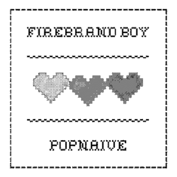
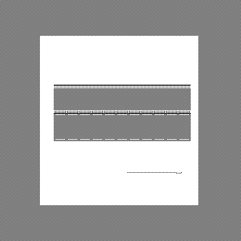
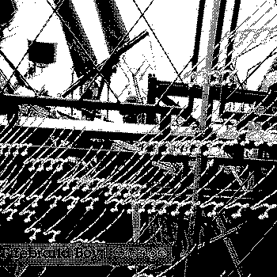

Ultrachip VS Forest Closure (2010)
Glasgow (2010)
Oh Deer (2008)
 popNaive (2008)
 Songs for Cake (2008)
 Orange (2006)
[...] This post was mentioned on Twitter by True Chip Till Death, firebrandboy. firebrandboy said: My discography is now available on Bandcamp http://is.gd/gRCtk http://is.gd/gRCsw #chipmusic #scotland [...]
Donations will be put towards hosting and admin costs; every tiny amount helps!

One Trackback
[...] This post was mentioned on Twitter by True Chip Till Death, firebrandboy. firebrandboy said: My discography is now available on Bandcamp http://is.gd/gRCtk http://is.gd/gRCsw #chipmusic #scotland [...]